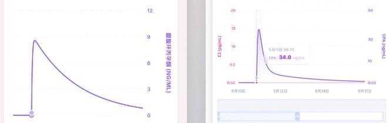

我不到老唐到底抄的谁的算法还是大杂烩了什么玩意，我到现在都不敢想象tyw把整个软件的代码塞到了三个文件里，每个文件好几千行…没眼看
但我我觉得@smiroyama 你那个写的好像不太对，虽然好像是我写的，不过不知道你改了没）））
我在我这边版本也简单复现了一下数据，虽然你这张图更好看但是我觉得不太对劲，在不考虑历史积蓄时按 Androcur 50 mg 说明书的数据，单次口服 50 mg 后峰值血药浓度约 140 ng/mL，约 3 小时达峰。若按剂量近似线性折算：12.5 mg = 50 mg × 1/4，Cmax ≈ 140 × 1/4 = 35 ng/mL，达峰时间约3小时
你看着改一下ww
但我我觉得@smiroyama 你那个写的好像不太对，虽然好像是我写的，不过不知道你改了没）））
我在我这边版本也简单复现了一下数据，虽然你这张图更好看但是我觉得不太对劲，在不考虑历史积蓄时按 Androcur 50 mg 说明书的数据，单次口服 50 mg 后峰值血药浓度约 140 ng/mL，约 3 小时达峰。若按剂量近似线性折算：12.5 mg = 50 mg × 1/4，Cmax ≈ 140 × 1/4 = 35 ng/mL，达峰时间约3小时
你看着改一下ww
